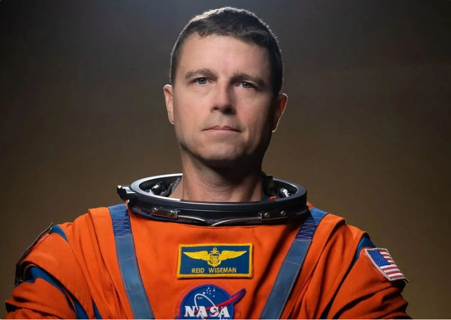
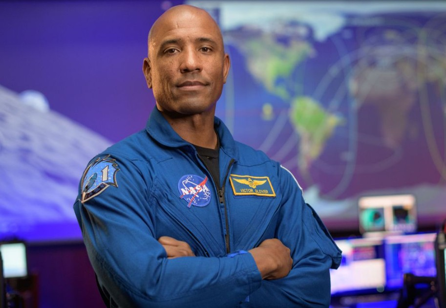
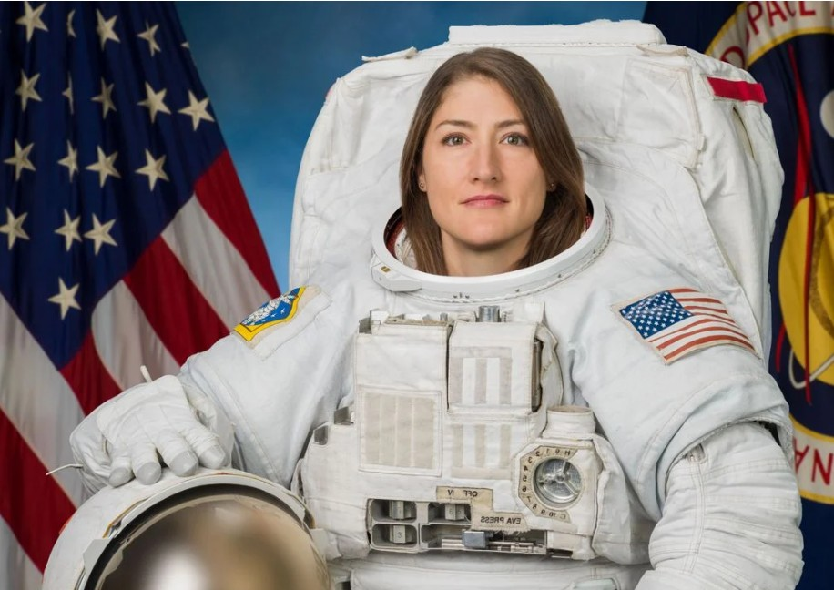
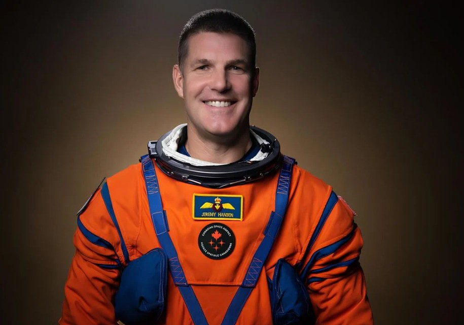

Załoga statku ARTEMIS 2
Gregory Reid Wiseman (ur. 11 listopada 1975 w Baltimore)
Amerykański inżynier, lotnik morski i astronauta. W 1993 ukończył szkołę w Timonium w stanie Maryland, w 1997 został bakałarzem inżynierii komputerów i systemów w Rensselaer Polytechnic Institute w Troy w stanie Nowy Jork,
a w 2006 magistrem inżynierii systemów na Uniwersytecie Johnsa Hopkinsa. Po ukończeniu instytutu szkolił się na lotnika morskiego w Pensacoli na Florydzie, w 1999 uzyskał licencję pilota, następnie służył w Wirginii.
W latach 2003–2004 uczył się w United States Naval Test Pilot School i został pilotem doświadczalnym w Naval Air Station Patuxent River w Maryland. 29 czerwca 2009 został wybrany przez NASA kandydatem na astronautę.
Od sierpnia 2009 do maja 2011 przechodził szkolenie astronautyczne w Centrum Lotów Kosmicznych imienia Lyndona B. Johnsona, po czym został inżynierem pokładowym.
Od 28 maja do 10 listopada 2014 uczestniczył w misji Sojuz TMA-13M/Ekspedycja 40/Ekspedycja 41 na Międzynarodową Stację Kosmiczną trwającej 165 dni, 8 godzin i minutę.
Start nastąpił z kosmodromu Bajkonur, a lądowanie w Arkałyku w Kazachstanie. W 2026 r. został dowódcą misji Artemis 2.

Źródło: https://www.yourweather.co.uk/
Victor Jerome Glover (ur. 30 kwietnia 1976)
Astronauta NASA. Pierwszy ciemnoskóry astronauta, który został stałym członkiem ekspedycji na Międzynarodową Stację Kosmiczną (ISS). Wziął udział w pierwszej operacyjnej misji statku Crew Dragon na Międzynarodową Stację Kosmiczną.
Stowarzyszenie Uczestników Lotów Kosmicznych przyznało mu Universal Astronaut Insignia za lot orbitalny (nr 565).

Źródło: https://www.yourweather.co.uk/
Christina Hammock Koch (ur. 29 stycznia 1979 w Grand Rapids w stanie Michigan)
Inżynier, astronautka NASA z 21. Grupy Astronautów NASA (rocznik 2013). Uczestniczka misji na Międzynarodowej Stacji Kosmicznej, 18 października 2019 wraz z Jessicą Meir przeprowadziła pierwszy spacer kosmiczny przeprowadzony wyłącznie przez kobiety.
17 listopada Koch, pod nickiem Astro Christina, jako pierwsza edytowała Wikipedię, będąc w kosmosie. Urodziła się w Grand Rapids w stanie Michigan i wychowała w Jacksonville w Północnej Karolinie. Od dzieciństwa marzyła by zostać astronautką.

Źródło: https://www.yourweather.co.uk/
Jeremy Roger Hansen (ur. 27 stycznia 1976)
Kanadyjski astronauta, pilot myśliwców, fizyk i akwanauta[2]. Jest członkiem misji Artemis 2, w ramach której dotrze najdalej od Ziemi do tego momentu w historii ludzkości.
W 2009 roku został zrekrutowany przez Kanadyjską Agencję Kosmiczną (wraz z Davidem Saint-Jacquesem). Przed wyborem na jednego z kanadyjskich astronautów Hansen był pilotem w randze kapitana w Królewskich Kanadyjskich Siłach Powietrznych.
Od tego czasu awansował do stopnia pułkownika. 3 kwietnia 2023 roku ogłoszono, że Hansen dołączy do misji Artemis 2. Hansen jest członkiem misji Artemis 2, która wystartowała 1 kwietnia 2026 roku w celu wykonania lotu dookoła Księżyca.
Hansen jest pierwszym astronautą spoza USA, który poleciał poza niską orbitę okołoziemską.

Źródło: https://www.yourweather.co.uk/